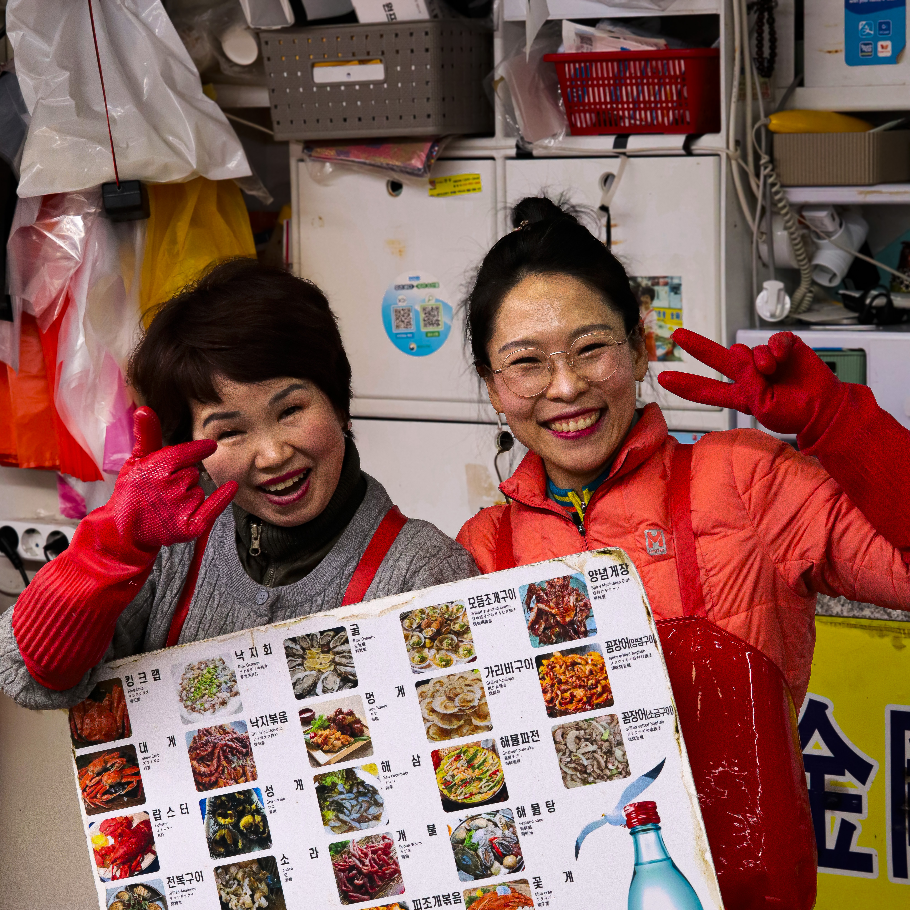
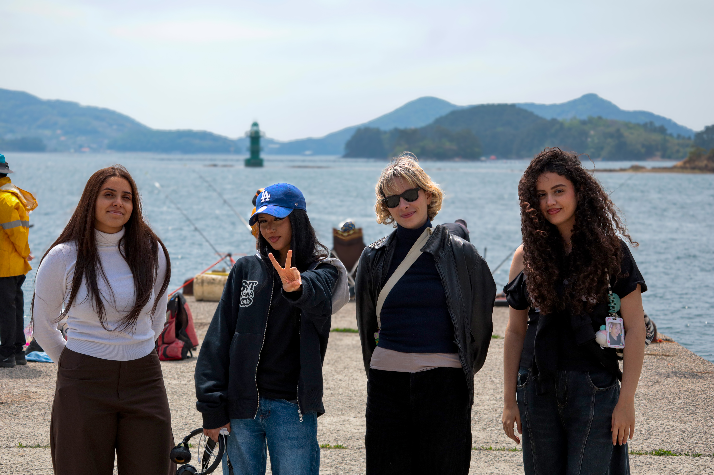
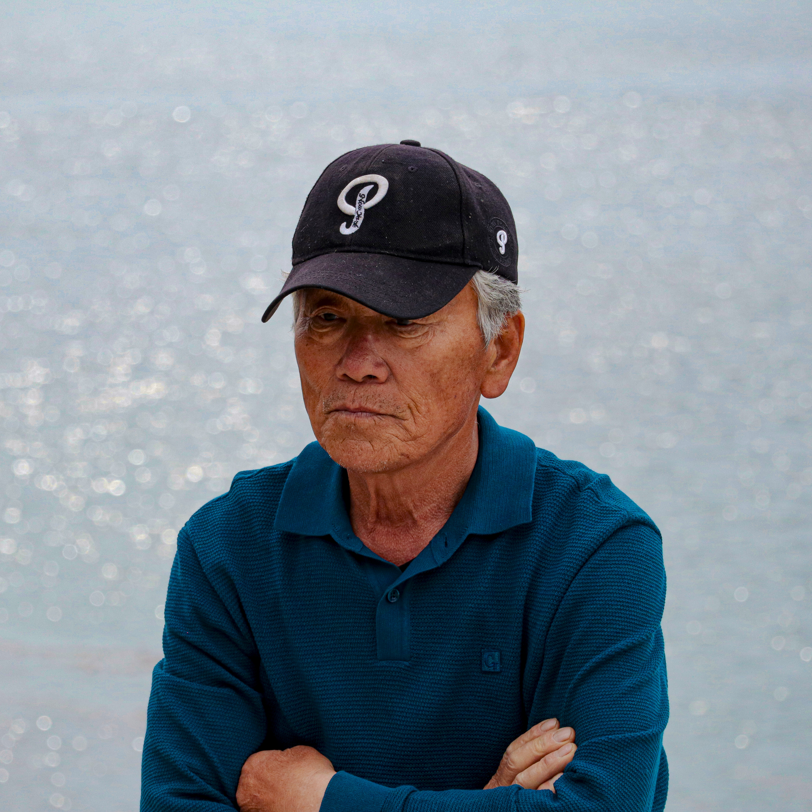
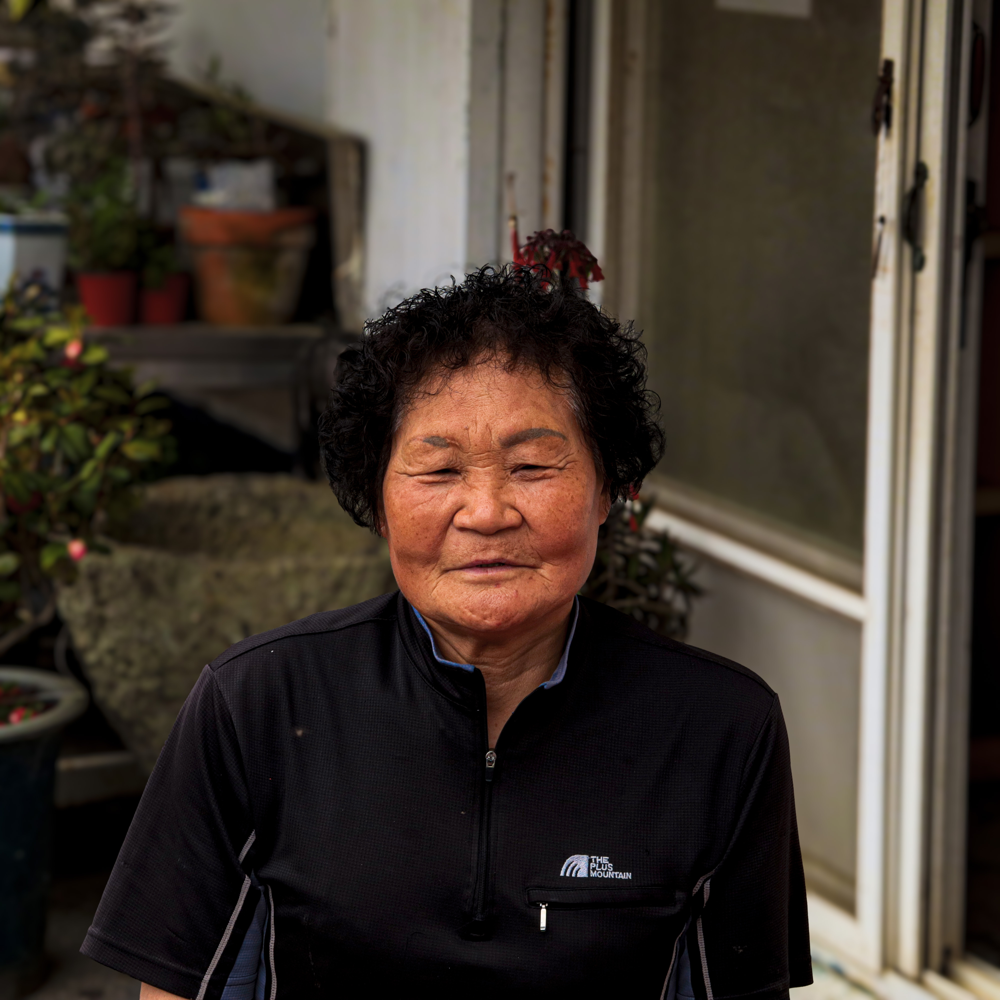
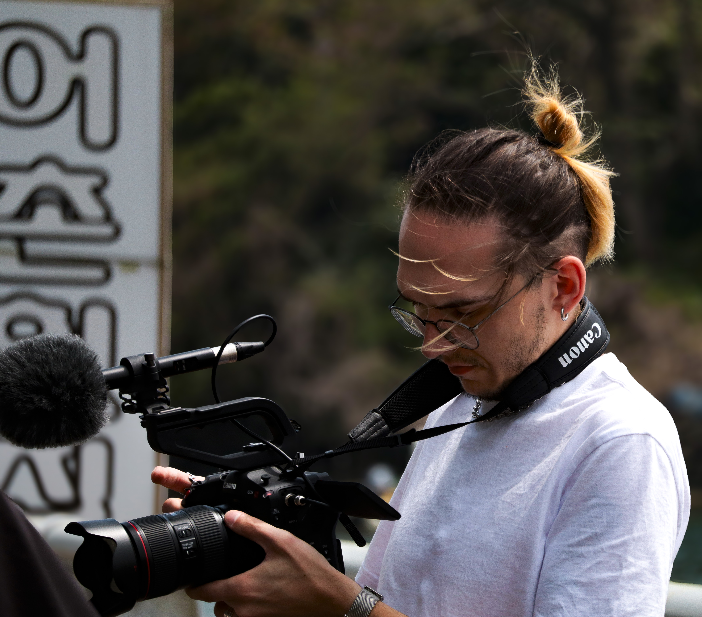
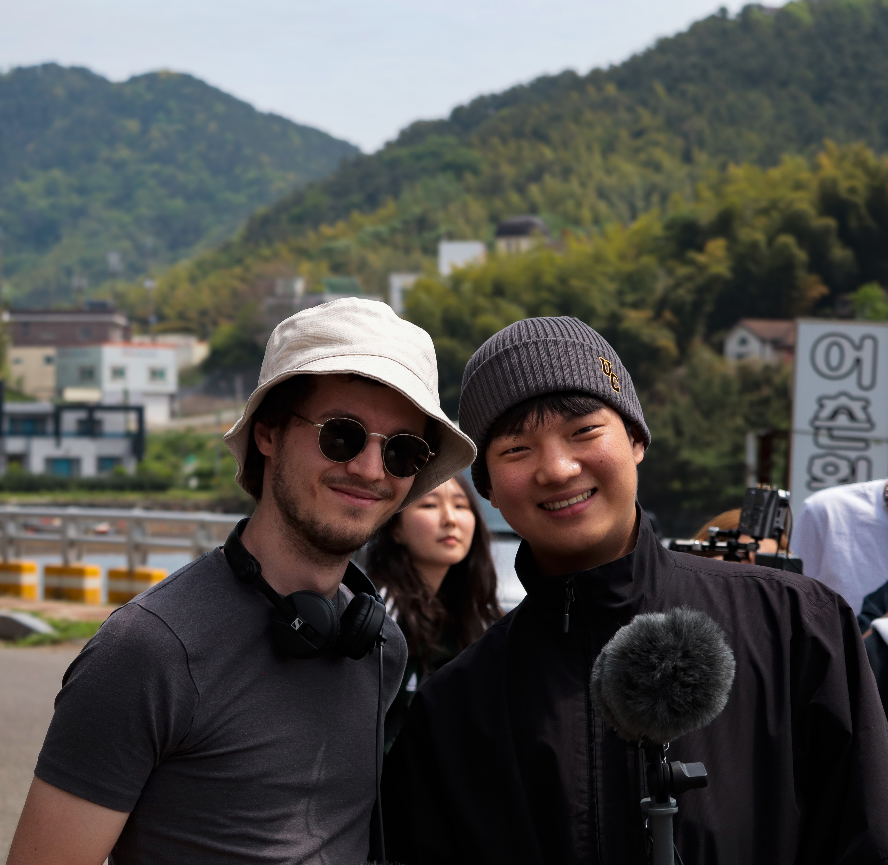
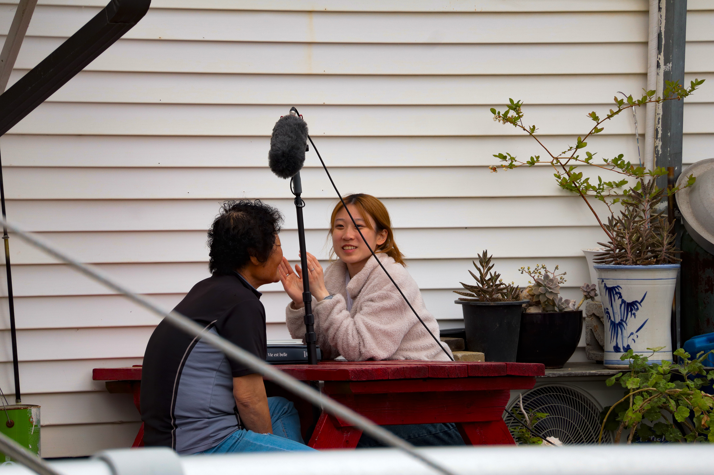
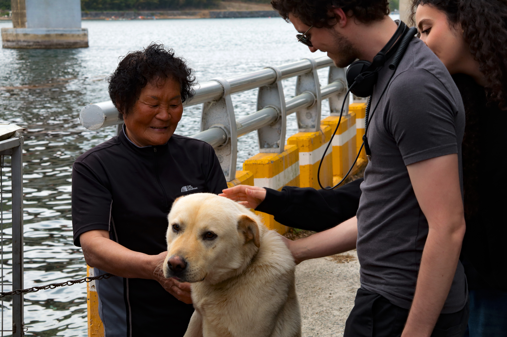
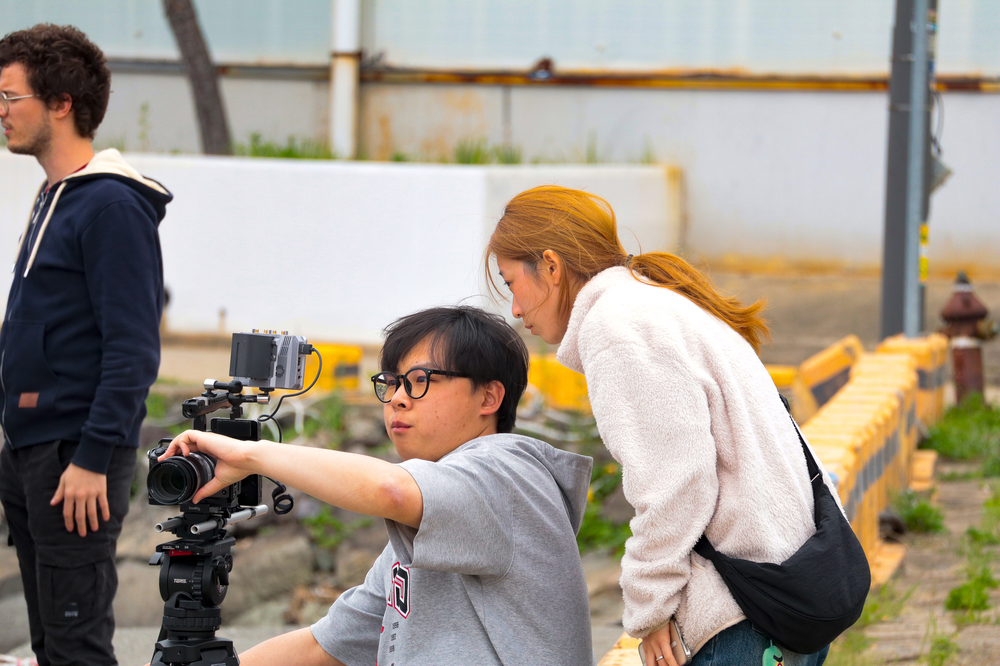

03 — Site documentaire
Site documentaire Vivre de la mer à Geoje
Découvrez à travers ce site, le documentaire que j'ai pu réaliser avec mon équipe en Corée du sud. Il traite de la pêche en Corée du Sud et de la disparition de cette pratique à travers les recherches et témoignages que nous avons pu recueillir.
Le sujet
La pêche et l'activité maritime : une pratique en voie de disparition
Nous avons voulu à travers ce documentaire, nous intéresser au milieu de la pêche en Corée du sud qui est un des symboles de la Corée du sud. Mais après plusieurs recherches, nous nous sommes rendu compte que cette pratique est en passe de disparaître et ses traditions avec. Nous avons donc décider de nous intéresser à cette pratique qui a fait la renommé de ce pays à travers le monde pour apporter un regard neuf sur une pratique qui s'éteint petit à petit. Nous sommes parti sur l'île de Geoje qui possède plusieurs petits villages de pêcheurs et restaurants de poissons pour interviewers les personnes qui sont au plus proches de cette activité. Nous avons pu discuter avec des restaurateurs, des pêcheurs, des vendeurs de poissons pour recueillir leurs opinions, leurs regards quant à cette activité et ce qu'ils pensent de la situation actuelle de ce milieu.




La démarche
Mon travail sur ce projet
Pour ce projet de groupe, j'ai pu réaliser la partie graphique, photographique et web de ce documentaire.
.svg)
Créations graphiques
Création du logo, d'éléments du site permettant à sa mise en forme. Mise en place de la charte graphique du site

Travail photographique
Prise de vue et captation d'image pour intégrer au sein du site du documentaire. Traitement des images pour être en accord avec le style du site.

Maquettage du site
Utilisation de Figma en collaboration avec le développeur pour réaliser la maquette du site et pour obtenir la version la plus abouti du projet
Ce que raconte le film
Les témoignages de la mer
Ce documentaire approche le thème de la pêche avec un regard neutre. Nous avons voulu, à travers le témoignage et l'histoire de 4 personnes, montrer l'évolution de ce milieu. Ce documentaire évoque un aspect social en s'intéressant aux acteurs de ce milieu en gardant un ton et une ambiance calme.
Extrait de témoignage
"L'avenir de ce métier... je pense qu'il pourrait disparaître. Si l'on parle des ressources marines, on ne trouve plus autant de produits qu'avant."
— Han So-hui / Poissonière du marché de Jagalchi
Images
Photogrammes & coulisses








Le film
Regarder le documentaire
Pour accéder au documentaire, cliquez sur le lien ci-dessous.
Voir le documentaire →